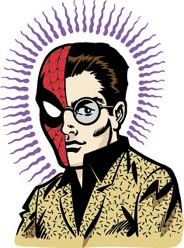

Людина-павук
Люди́на-паву́к або Спа́йдермен (англ. Spider-Man, 27 серпня 2001, справжнє ім'я — Peter Benjamin Parker) — супергерой коміксів компанії Marvel, вигаданий Стеном Лі та Стівом Дітко. Вперше Людина-павук з'явився у серії коміксів Amazing Fantasy #15 у серпні 1962 року. Відтоді він є одним з найпопулярніших і комерційно найуспішніших супергероїв. Зараз він з'являється не лише у коміксах, а й у фільмах, на телебаченні, на одязі, у відеоіграх та у вигляді іграшок.
Це перший персонаж супергерой-підліток, який діє самостійно, а не допомагає дорослому супергероєві. Хоча за час випуску історій про нього він встиг закінчити школу, коледж та навіть стати одруженим учителем.
Marvel Comics випустила безліч серій коміксів про Людину-павука, першою з яких була The Amazing Spider-Man (укр. Неймовірна Людина-павук); її останній випуск вийшов в грудні 2012 року.
Герой — підліток

Можливо, секрет популярності Людини-павука полягає в тому, що вперше головним героєм коміксів про супергероїв став підліток. Саме так замислювали Спайдермена його творці — як підлітка-сироту, вихованого дядьком і тіткою. Ось тільки цей підліток веде не зовсім звичайне, м'яко кажучи, життя: він примудряється поєднувати будні звичайного студента і сповнене небезпек життя борця зі злочинністю.
Тягар відповідальності
Спайдермену спочатку доводиться досить важко, оскільки в нього немає досвідченого наставника, який міг би допомогти йому. Отримані суперздібності ще більше віддаляють Пітера, який і без того не мав особливої популярності, від однолітків. А після смерті дядька Бена молодому Паркеру доводиться на власній шкірі перевіряти правильність висловлювання: «З великою силою приходить і велика відповідальність».
Ідея
На початку 60-х років 20 століття комікси отримали надзвичайну популярність серед підлітків. Герої, наділені суперздібностями, які рятують людство від усіляких лих, і лиходії, що мріють підкорити світ, заповнили сторінки журналів. Нарешті, в 1962 році редактор і сценарист Стен Лі придумав іще одного героя, якому судилося отримати небачену популярність. Одного разу Лі в одному з журналів трапився на очі персонаж-підліток на прізвисько Павук. Ні, супергероєм він не був, але незважаючи на це боровся зі злочинністю — і досить успішно, до речі. Лі «взяв на олівець» незвичайного підлітка. Обмірковуючи свого нового героя, редактор неуважно стежив за… мухою, яка повзла по стіні. Так, власне, і народилася ідея створення добре знайомого всім нам Спайдермена. І хоча редактор Marvel Мартін Гудман сумнівався в успіху нового персонажа, він усе ж таки дав «добро» на його випробування в одному з випусків журналу. Цей випуск несподівано для Гудмана став одним із найбільш успішних коміксів Marvel і приніс компанії солідний прибуток.
Біографія
Пітер Паркер представлений дуже розумним та здібним підлітком, що живе у місті Нью-Йорк. Він весь час запізнюється і йому не таланить, але він розуміється на хімії та фізиці. Його не дуже люблять інші підлітки, не поважають та ображають. Пітер жив з тіткою й дядьком. Одного разу Дядько Бен сказав Пітеру, що велика сила потребує великої відповідальності. А якось на демонстрації Паркера вкусив радіоактивний павук, і у нього з'явились павучі здібності, серед яких вміння повзати по стінах, випускати павутиння (спочатку для цього він використовував механічні прилади з густою пастою), вміння відчувати небезпеку (павуче чуття), здатність бачити в темряві та без окулярів (до цього він був короткозорим), велика сила, швидкість, гнучкість, витривалість та спритність, до того ж він міг тепер швидко заживлювати рани, потім у нього з'явились отруйні жала. Після закінчення реслінг-шоу, де він виступав, він не захотів спинити злочинця, який потім вбив його дядька. Після цього Паркер вирішив боротися зі злочинністю. Але водночас йому доводиться заробляти гроші. Він вирішує фотографувати себе, як людину-павука та відносити фотографії до газети «The Daily Bugle», де головним редактором є Джона Джеймсон. У Пітера з'являються декілька дівчат, щоправда, не водночас, але одну з них, Гвен Стейсі, вбиває його ворог. Цим ворогом є батько його найкращого друга, Гаррі, Норман Осборн, переодягнений у костюм Зеленого гобліна. Після битви з ним, коли Норман Озборн дізнається, що Людина-павук це Пітер, він гине. Після цього Пітер одружується з Мері Джейн Вотсон. У них народжується дочка Мей Паркер(її звати як і тітку Пітера), у якої з'являються здібності схожі на батькові й вона теж стає супергероєм, на ім'я Дівчина-павук, та син Бенджамін Річард Паркер. Згодом на Пітера причіплюється іншопланетний симбіонт та він його знімає. Симбіонт потрапляє на знайомого Пітера, Едді Брока та цим створює собі нового ворога — Венома (що означає — отрута). В одному з випусків The Amazing Spider-Man Людина-павук гине у битві з Морланом, після чого дивом відроджується.